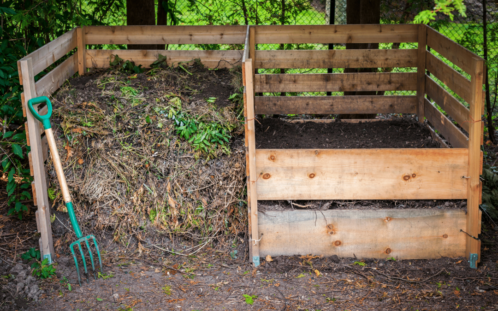
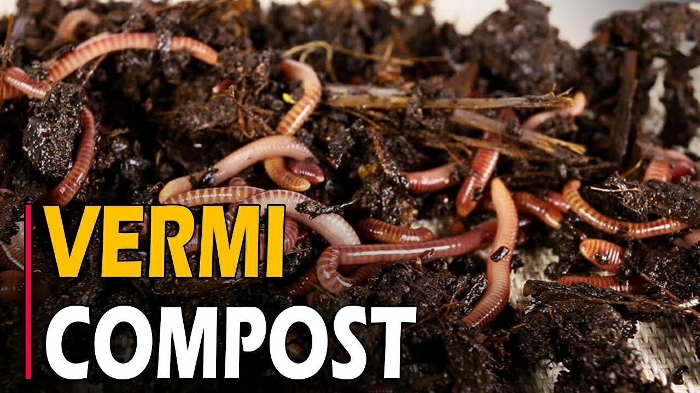
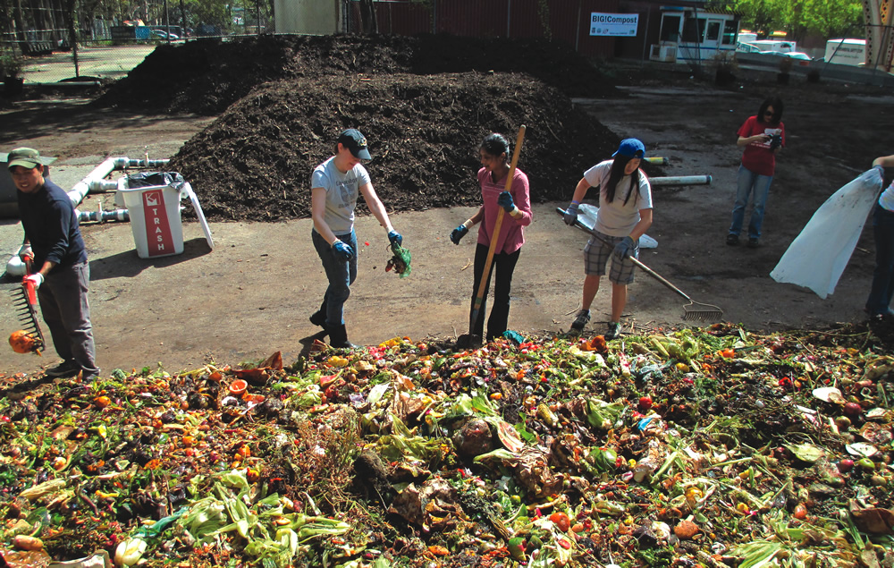
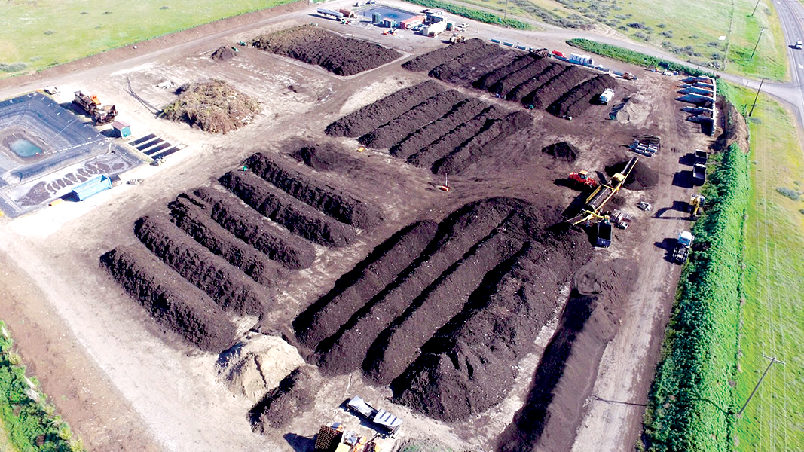

What is Organic Recycling?
Organic recycling, also known as composting, is the process of converting organic waste materials, such as food scraps, yard clippings, and other biodegradable items, into valuable soil amendments. This process involves the natural breakdown of organic matter by micro organisms, resulting in nutrient-rich compost that can be used to improve soil health and support plant growth. By recycling organic waste, we can reduce landfill usage, lower greenhouse gas emissions, and create a sustainable cycle of nutrient reuse.
How to Get Started?
Types of Composting
-
Home Composting
-
Backyard Composting:

This involves creating a compost pile or bin in your backyard where you can add kitchen scraps, yard waste, and other organic materials. It's ideal for households with space for an outdoor composting area.
- Vermicomposting:

This method uses worms, usually red wigglers, to break down food scraps and other organic materials in a controlled environment. It's perfect for those with limited space or who prefer an indoor composting solution.
- Community Composting
-
Community Gardens:

Many community gardens have composting programs where members can contribute their organic waste. This not only helps recycle waste but also supports local gardening initiatives.
- Municipal Composting Programs: Some cities offer curbside composting pickup services, where organic waste is collected and processed at a municipal composting facility.
-
Community Gardens:
- Large-Scale Facilities:

Industrial composting facilities handle large volumes of organic waste from various sources, including restaurants, supermarkets, and agricultural operations. These facilities use advanced techniques to efficiently process organic materials into compost.
Choosing the best method.
Choosing the right type of composting depends on your specific needs and circumstances. Here are some considerations:
- Space Availability: If you have a backyard, traditional composting or vermicomposting could be suitable. For those in apartments or without outdoor space, vermicomposting or participating in community composting programs might be the best options.
- Time and Effort: Home composting requires regular maintenance, such as turning the compost and balancing green (nitrogen-rich) and brown (carbon-rich) materials. Community or municipal composting programs may require less effort on your part.
- Volume of Waste: Consider the amount of organic waste you generate. Larger volumes might be better suited for backyard composting or participation in municipal programs, while smaller amounts can be efficiently managed through vermicomposting.
By understanding the different composting methods and evaluating your personal preferences and circumstances, you can choose the most suitable approach to start recycling your organic waste and contributing to a more sustainable environment.
Setting up the Bin(What we prefer)
Constructing a compost bin can be a great way to manage organic waste and create nutrient-rich compost for your garden. Here's a step-by-step guide on how to build a simple compost bin using materials you can easily find. This guide is for a basic, three-bin compost system, often referred to as a "Colombia compost bin."
- 12 wooden pallets (for a three-bin system)
- 12-16 wooden stakes
- Wire mesh or hardware cloth (optional, for lining the inside of the bins)
- Screws and a drill (or nails and a hammer)
- Work gloves

- Choose the Right Location: Select a dry, shady spot near a water source for your compost bin.
- Assemble the Bin: Follow the manufacturer's instructions to assemble your Colombia composting bin. Ensure it has good ventilation and drainage.
- Prepare the Bin: Place a layer of coarse materials, such as straw or small branches, at the bottom of the bin to help with drainage and airflow.
- Add Organic Materials: Alternate layers of green (nitrogen-rich) and brown (carbon-rich) materials. Green materials include kitchen scraps and grass clippings, while brown materials include dry leaves and cardboard.
- Maintain the Compost: Keep the compost moist, like a damp sponge. Turn the compost regularly to aerate it and speed up the decomposition process.
- Monitor and Use the Compost: Monitor the compost for readiness. Finished compost is dark, crumbly, and smells earthy. Use it to enrich your garden soil.
What are the benefits of composting?
- 1.Enviromental Impact
- Reduces GreenHouse Gas Emissions: Composting organic waste reduces methane emissions from landfills, a potent greenhouse gas.
- Decreases landfill Waste:Less organic waste in landfills means reduced need for landfill space and lower environmental contamination.
- Improves Soil Health:Compost adds essential nutrients to the soil, enhancing its fertility and structure.
- Increases Water Retention:Compost helps soil retain moisture, reducing the need for frequent watering and conserving water.
- Diverst Organic Waste:Composting significantly reduces the amount of organic waste that ends up in landfills.
- Promotes Recycling:Encourages the recycling of kitchen scraps, yard clippings, and other biodegradable materials into valuable compost.